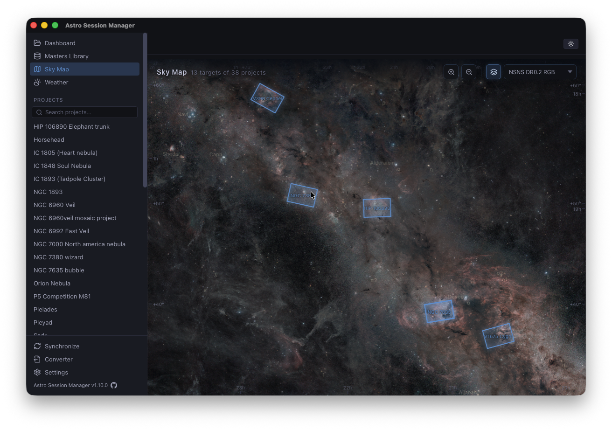

A desktop app that reads your existing FITS, XISF, and DSLR raw files in place — calculates integration time, finds matching calibration frames, and analyzes sub-frames without ever moving or copying your data.
You come home, copy cards, stash frames in a dated folder — and then, a week later, try to remember which calibration matches what. This is the tool that remembers for you.
No import, no database, no copying. Point it at your capture folder and it indexes what's there. Your files stay exactly where they are, with the names and paths you gave them.
Each project, filter, and session gets its total exposure calculated from FITS headers. No spreadsheets. No arithmetic. Just the number, updated as you add frames.
Tells you which projects have darks, bias, and flats ready — matching by exposure (±0.5 s), sensor temperature, and resolution. You see at a glance what's missing.
Per-frame FWHM, eccentricity, star count, and HFR. Built-in heatmap and tilt visualization help you spot collimation drift or a bad night before you stack.
JPEG previews generated on demand with a bounded in-memory cache. A priority queue means clicking a new filter jumps straight to those frames — previous work keeps cooking in the background.
Reads Canon CR2/CR3 and Sony ARW directly — including EXIF exposure data. Convert to FITS when you want to mix DSLR nights with CMOS data in your stacking pipeline.
Some catalog apps suck your data into a proprietary database. When the app goes away, so does the structure — sometimes the files themselves.
This one doesn't. It reads whatever naming scheme you already use, parses FITS and XISF headers directly off disk, and builds its view on top. Delete the app and your library is exactly where you left it.
Nothing is encrypted, re-encoded, or moved behind your back. Your 2 TB of lights from the last three years stay as folders and files you can open in PixInsight, Siril, APP, or anything else whenever you want.
Headers, star metrics, and a preview — without launching anything else.
All your project FOVs plotted on a deep-sky survey background. Useful for choosing the next target, remembering what you already framed, or spotting gaps in a mosaic.

Seven-day hourly forecast focused on what matters for imaging: low/mid/high cloud layers, humidity, dew point, wind, visibility, and precipitation probability — with moon illumination and sun/moon position bars. Click a day to expand the full hourly breakdown.
Forecast data via Open-Meteo.
If your capture software writes standard FITS headers, this reads them.
It's free, it's open source, and it won't touch your files.
If it helps, great. If not, it's a single uninstall away.